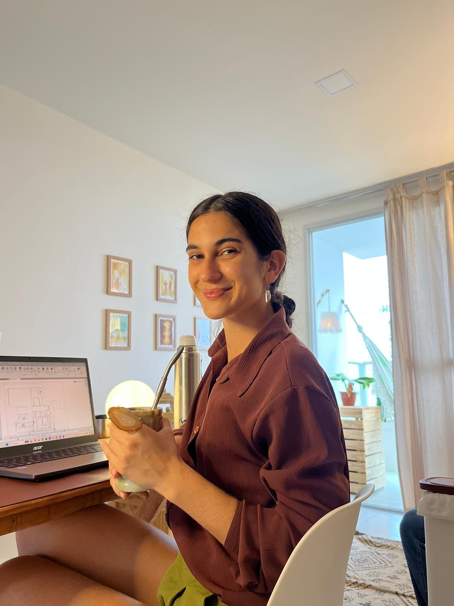
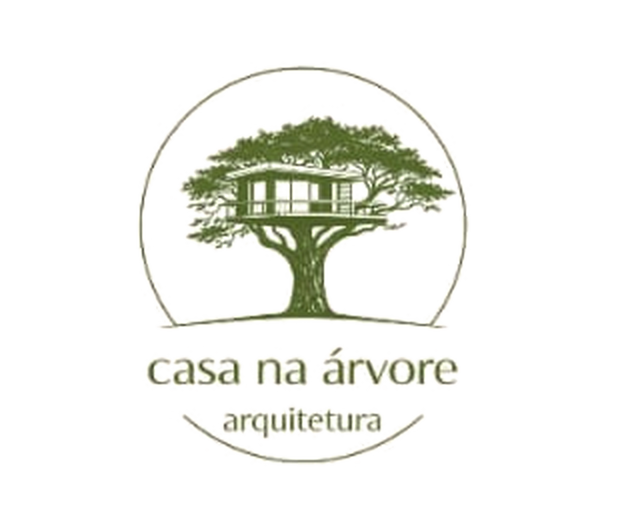

Luisa Dalcin
Projetista · Architectural Drafter
Projetando casas. Construindo meu futuro.

Naquele momento, eu ainda não sabia até onde esse caminho me levaria.
Mas foi ali que começaram a se formar as raízes da profissional que estou construindo hoje — entre o desenho à mão, o detalhamento técnico e a vontade de ver uma ideia se tornar espaço.
Um caminho em construção
Da arte ao projeto
Minha trajetória na arquitetura começou ainda muito cedo, aos 16 anos, trabalhando em um escritório de interiores no Mato Grosso. Foi ali que tive meu primeiro contato com projetos, detalhamento, modelagem e com a transformação de uma ideia em espaço.
Eu trabalhava de forma independente com desenho e pintura, e foi a partir desse trabalho que surgiu o convite para atuar como projetista. O que começou como arte acabou encontrando na arquitetura uma nova forma de expressão.

A marca que reúne tudo o que quero projetar
A Casa na Árvore é um projeto autoral em desenvolvimento, criado como parte da construção da minha trajetória profissional na arquitetura. A marca reúne meus principais interesses de atuação — arquitetura residencial, casas de campo, interiores, bioarquitetura e conforto ambiental.
Um projeto autoral em construção, que acompanha minha evolução como projetista e futura arquiteta.
Propósito
Vejo o meu trabalho como um dom que deve ser desenvolvido com responsabilidade, excelência e serviço. Construir minha trajetória profissional também significa honrar meus princípios e colocar meus talentos a serviço das pessoas.
Competências profissionais
BIM e modelagem
Revit · SketchUp
Representação
Enscape · Renderização · Pós-produção · IA
Projetos
Edificações · Residenciais · Interiores
Experiência
Brasil · Flórida, EUA · Projetos autônomos · Colaborações
Vamos trabalhar juntos?
Acredito que é trabalhando que se constrói. Busco novas oportunidades, projetos e parcerias profissionais que me permitam contribuir com meu conhecimento e ampliar meu olhar sobre a arquitetura.
- luisadalcin.arq@gmail.com
- +55 27 99299-5445
- Vila Velha · ES · Brasil